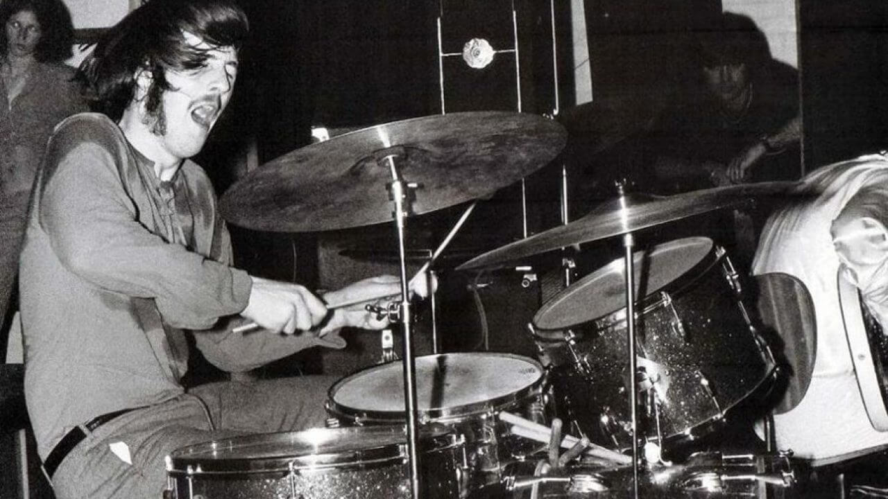
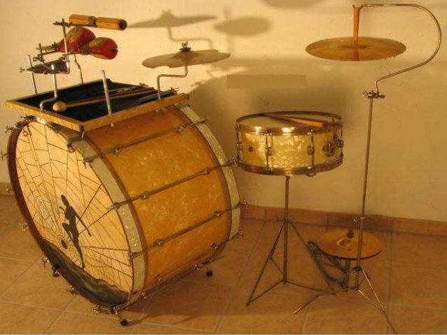
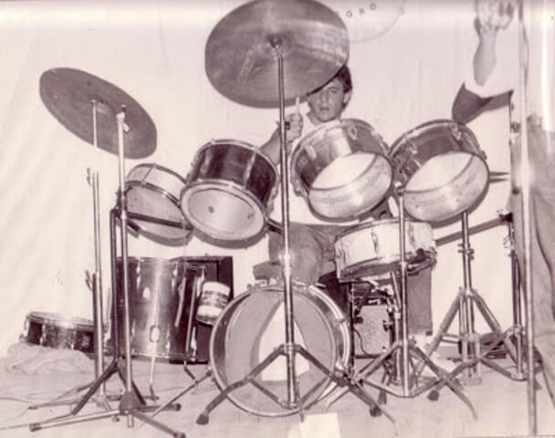
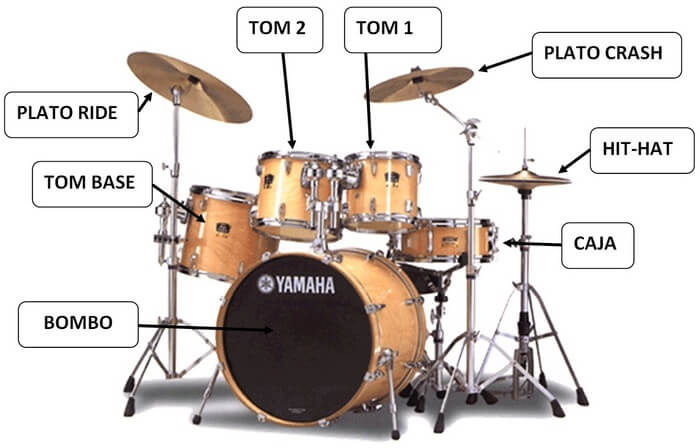

La Batería.
La batería se podría considerar como un conjunto de instrumentos musicales de percusión que puede ser usado por varias bandas musicales a nivel mundial. La batería musical nace de la necesidad de poder producir percusiones en un solo conglomerado y que fuese manipulable por una sola persona.

Historia.
Para empezar, no debemos olvidar que la batería es un instrumento de percusión; dichos instrumentos son los más antiguos (que sepamos) que ha utilizado la humanidad desde la noche de los tiempos.
Estamos tan acostumbrados a ver baterías en los grupos musicales y orquestas desde siempre, incluso desde antes de que todos hubiésemos nacido, que nos olvidamos de que esto no siempre ha sido así… me explico:
Podemos decir que este instrumento se inventó hacia 1.890; es decir, hace unos 130 años aproximadamente. Antes de inventarse, lo que se llevaba era que un músico tocase el bombo; otro los platillos; otro la caja; y otro u otros, diversos timbales. Esto aún se sigue usando en nuestros días en diversos tipos de orquestas sinfónicas, agrupaciones de gaiteros, etcétera.
 Con la invención del pedal del bombo, a principios del siglo XX, por parte de Wilhelm F. Ludwig, se permitió que casi todos los instrumentos de percusión pudieran ser tocados por un solo músico.
La marca de baterías Ludwig sigue siendo una de las más reconocidas a nivel mundial. Debe su nombre al antes mencionado, Wilhelm F. Ludwig. También son conocidas las marcas (entre otras muchas): Pearl, Rogers, Tama, Slingerland, Yamaha… (esta última está en todo tipo de instrumentos y artefactos).
Bueno… podría seguir hablando de parches, mecanismos, diámetros de bombos, etcétera, pero no es la intención de este artículo, (se haría largo y pesado), sino que mi intención es hablar de los distintos tipos de baterías que se han utilizado y aún siguen usándose en los últimos años del siglo XX y en la actualidad del presente siglo XXI.
Entrando en materia: las baterías de los años sesenta, posteriores y anteriores tenían uno o dos timbales “amarrados” al bombo, además de: caja, platillos, chaston, timbal base y el propio bombo. Estoy hablando siempre, siempre, de baterías acústicas.
A mediados o ya bien entrados los años setenta surgieron los llamados “rototoms” que eran (son) una especie de timbales que se enroscan en un soporte, van aparte del bombo y, según los enrosques algo más o algo menos, el parche se tensa para así sonar un poco más agudo o un poco más grave. Recuerdo un grupo musical en el que participé en aquellos años, en el que nuestro baterista se había comprado una batería de la marca Slingerland, que además de sonar genial, llevaba tres rototoms a la izquierda (por orden de tamaño, uno era del tamaño de un bote de conservas grande; el segundo, algo más grande; y el tercero, más grande aún (rozando el tamaño de los timbales de bombo: alto y tenor). A la derecha de los citados timbales llevaba otros dos rototoms, de tamaño bastante considerable que sonaban estupendamente. Recuerdo que con tanto artilugio, la batería envolvía casi por completo a nuestro baterista (gracias que tenía una silla giratoria, que si no…).
¿Cuáles son los elementos que componen una batería?
La batería está integrada por varios tambores, algunos de madera que son cubiertos por dos parches fabricados en su mayoría de plástico. Existen diferentes tipos de parches, desde los más básicos, hasta lo que tienen una capa de plástico base y otra con aceite que conserva el sonido y crea un “reverb”, incluso hay parches fabricados de látex.
En concreto, un tambo contiene dos parches, uno que sirve para el golpeo en su parte superior y otro resonante en la parte inferior. El diámetro de estos tambores puede varias en diámetro, esto afecta directamente el tono.
En la batería se pueden encontrar los platillos, que más adelante ampliaremos. La batería se puede afinar mediante una llave de afinación y un sistema de capachos o lugs, además de pernos de afinación que pueden tensar los parches, entre más tensos los parches mas agudos será el sonido y viceversa.
Piezas.
Bombo.
Suelen tener un diámetro desde 18’’ hasta 26’’ y una profundidad entre 14’’ y 22’’, aunque también se pueden comprar de hasta 28 pulgadas de diámetro, el más utilizado hoy día es el de 22×18’’. El bombo se maneja utilizando un pie y un pedal con una maza en un extremo.
Para bateristas más profesionales se utiliza un pedal doble, en este caso se emplean ambos pies que se conectan por medio de un sistema cardánico que activa la segunda maza, aunque ha dejarse claro que existen diferentes sistemas, algunos incluso se pueden manejar con el talón y la punta de los pies.
En la batería musical el bombo posee la voz más grave y potente de todo el conjunto, es por ello por lo que cumple una función de cimentación básica en la melodía. En el Heavy Metal incluso se pueden utilizar dos pedales que se ubican por delante del bombo para alcanzar mayor velocidad.
Caja.
También se le conoce como redoblante o tarola, tiene un diámetro de 14’’, pero también se le ubican de 10 a 17 pulgadas. Suelen tener una profundidad de 5.5 pulgadas, pero estas medidas varían según la necesidad del músico. A diferencia de otros tambores, la caja cuenta con una bordona, es decir, un conjunto de alambres que se colocan cerca de la superficie del parche de resonancia.
La unión de las piezas anteriores genera vibraciones que a su vez genera el sonido característico de los redoblantes. Su función principal es marcar los compases, esto no impide que se pueda utilizar libremente para crear cambios en tiempos y marcha.
Tom toms.
Suelen tener un diámetro de entre 14 y hasta 20 pulgadas. Generalmente se suelen fabricar con patas individuales, aunque en algunas ocasiones se les puede ver anclados en un pedestal de platillo.
Platillos.
En realidad la posición y configuración de platillos y tambores se hacen a gusto del baterista. Es por ello se suelen encontrar varias formas, tamaños e incluso marcas. Cada una de las fabricantes ofrecen sonidos únicos que agradan a la composición final.
- Crash o Remate: son platillos medianos de 12 a 22 pulgadas. Utilizados principalmente para dar énfasis en algunas secciones para agregar rítmo.
- Ride o Ritmo: son platillos grandes cuyo diámetro varia entre 14 y 24 pulgadas, aunque existen algunas marcas que los llegan a ofrecer en hasta 32 pulgadas. Sin embargo el más común es de 20, 21 y 22 pulgadas, suelen utilizarse para llevar el ritmo en sustitución del hi-hat.
- Splash: Es el platillo pequeño, puede ser de 5 hasta 13 pulgadas. Se le utiliza para efectos especiales, en especial en pasajes con intensidad reducida.
- China: platillo que se fabrica desde 10 hasta 22 pulgadas. Los bateristas lo utilizan para hacer efectos, su diseño es característico pues suelen ser colocados al revés. Tienen similitud de sonido con el crash.
- Crash ride: Es un platillo mediano de 18 a 22 pulgadas, hay personas que lo utilizan como Crash y como Ride, esto gracias a su gran potencia.
- Hi-hats, Charleston, Charles o Contratiempos: es un sistema que está compuesto por 2 platillos instalados en un soporte con pedal que le permite que uno caiga sobre el otro y que ambos suenen. Se fabrican entre 10 y 15 pulgadas, los más comunes son de 14 y 15 pulgadas. Puede ser normal Edge, este último consiste en que el plato que va abajo tiene un borde corrugado que le brinda un sonido más consolidado para ciertos géneros. Los hi-hats se pueden tocar abiertos o cerrados y en compañía de un pedal.
- También existen algunos platillos de efectos “especiales”, tal es el cado de los bell, los cup chime, chopper, spiral trash, entre otros. Estos son capaces de producir sonidos únicos para mejorar y ampliar el sonido final.
- Existen algunas baterías incluyen un set de platillos gong que en varias ocasiones funcionan solo como decoración. Suelen fabricarse desde los diminutos gongs de 6 pulgadas a los de 60’’. Aunque también hay algunos gigantescos de 80 pulgadas.
Baquetas o palos.
 Sin parte del conglomerado más grande, las baquetas o palos son fundamentales para lograr generar el sonido. En el caso de las escobillas se puede ver en uno de sus extremos un peine de cerdas o pelos, estos suelen ser de plástico o metálicos, esto les permite golpear moderadamente, por ello se le pueden ver utilizados en estilos como los Blues, Swing o Jazz, aunque cualquier baterista de cualquier estilo puede utilizarlas.
Las baquetas varían según el material con el que se han fabricado, longitud, grosor, tipo, material de punta, peso, forma de la punta, etc. Todo ello definirá la rapidez, intensidad y precisión con el cual se pueda genera el sonido.
Por regla general las baquetas más pesadas se utilizan para estilos más específicos como el Hard Rock y el Metal por la cantidad de potencia que desprenden. Aunque cada baterista sabe que utilizar porque en géneros como el Pop o el Jazz por ejemplo los sonidos suelen ser más suaves.
Pedales.
Son utilizados por los pies para controlar distintos elementos de la batería. Generalmente los platillos hi hat y el bombo de la batería. Sin embargo, y aunque no es muy frecuente, algunos bateristas utilizan pedales en cajas, tambores u otros hi hats que controlan con pedales remotos.
Los pedales del bombo constan básicamente de:
En términos concreto, la función del pedal del platillo hi hat es parecido, su función principal es cerrar horizontalmente ambos platillos y separarlos cuando al soltar el pedal, esto hace que no se cuente con leva y maza.
- Una plataforma sobre la que el pie aplica la fuerza.
- Una maza con un extremo pesado que tiene que golpear el parche del bombo, la superficie de éstos pude ser de plástico, madera o fieltro.
- Un sistema de muelles u otros sistemas que provocan la tensión necesaria para que la mza del pedal regrese a la posición de reposo.
- Una leva que transforma el movimiento giratorio arriba debajo de la plataforma en el movimiento giratorio atrás delante de la maza.
- Una conexión mecánica entre el pedal y la leva. Con frecuencia se utiliza una cinta de nylon, kevlar o una cadena simple o doble acero. En estos últimos años le sistema de tracción directa ha ganado muchos adeptos, en él una pieza rígida se une a la plataforma y la leva.
La mayoría de músicos utiliza solo un pedal para el bombo, aunque ya en los últimos años se ha estado utilizando el pedal doble, esto hace que gane bastante popularidad. Lo que hace este doble pedal es que el baterista toque patrones complejos como lo hace con ambas manos. Otra de las ventajas es que no tiene que recurrir a instalar un segundo bombo con pedal, lo que a la larga es un ahorro económico.
Doble pedal.
Es similar al pedal simple con la ventaja de que se pueden generar golpes y controlar con ambos pies. El sistema frecuente es la de articular dos mazas en un solo bombo, esto ayuda a obtener sonidos similares en cada golpe.
Aunque hay que dejar en claro que utilizarlos también implica un mayor reto en la manipulación del pedal dentro del conjunto ya existente, en ocasiones el músico tiene que recolocar los soportes de la caja con su encaje con el hi- hat o charles siendo complicados que ambos se posición bien debajo del pie del músico.
Uno de los pioneros de pedal de doble bombo fue Louie Bellson, baterista de Jazz. Con el tiempo este tipo de pedales se ha utilizado en géneros como el hard core, rock, metal y otros similares.
{kind=link}